Тури
Календар 2027
Про мене

UA / EN
Залишити заявку
Авторські групові тури · сезон 2027
Мистецтво
подорожувати
Маленькі групи, свої люди поруч і маршрут, продуманий до кожної деталі.
Обрати подорож →
Explore · Experience · Inspire
Офіційний туроператор
Гортай ↓
THE ART OF TRAVEL